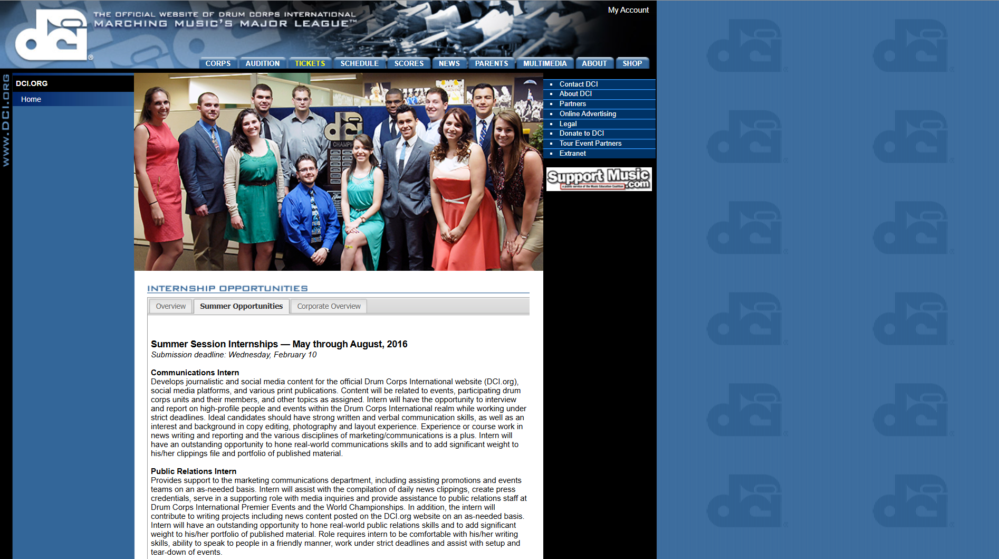

Ten Years
December 30, 2025
December 2015. I had just completed my first semester of college, during which I changed my major from general studies to communication studies with a new career goal of working in corporate communications or public relations. First things first, it was time to look for an internship.
I had little on-paper to offer anyone, but I figured there would be no harm in applying, seeing how far I made it into the process, and learn where I stood among other candidates. The opportunity I felt most confident in was a communications internship for Drum Corps International—an organization I had experience with as a marching member of Jersey Surf, a performing arts ensemble which competed in the DCI World Class circuit. I cannot recall my mindset of the time, but I can assume there was a belief any connection to an organization would hopefully lessen the need for the skills needed to complete the job; foolishness.

There were two people who helped me during my application process to DCI—the late Michael Boo, a prolific marching arts writer who passed away in 2020, and Joe Lesko, the founder of Micro Marching League (MML), whom of which I had formed a sort of friendship with since being on MML since 2012.
Michael offered me not only a detailed eye on my cover letter, a history of how he pioneered a lot of communications for the marching arts activity in the digital age, but also career-defining advice on the dangers of connecting self-worth with work output.
Joe, while also offering a line-by-line editing eye on my application as a whole, offered me something much more meaningful and overall impactful to my career.
"I just realized I could use your help with social stuff for MML, if you're interested."
This message kickstarted what would eventually become my career, much of it rooted in social media content creation, management, and analysis. Not only was Joe willing to give me full creative freedom to do with MML's social presence as I pleased, but offered me guidance along the way, serving as my first career mentor as I learned the ropes of social media and finding news ways to be creative.
Much of the work I have done for MML remains as part of my portfolio, though my contributions to its platforms currently exist in the form of a yearly recap video. Still, I will always credit MML as my first big break in my career—something I remind Joe whenever I can.
My application was rejected almost immediately for that internship; I think I heard back within a matter of hours. Still, what I was able to learn those first few years of running MML's social media made an immense impact on the quality of work I put out today while serving as a constant reminder about giving back and the importance of mentorship.